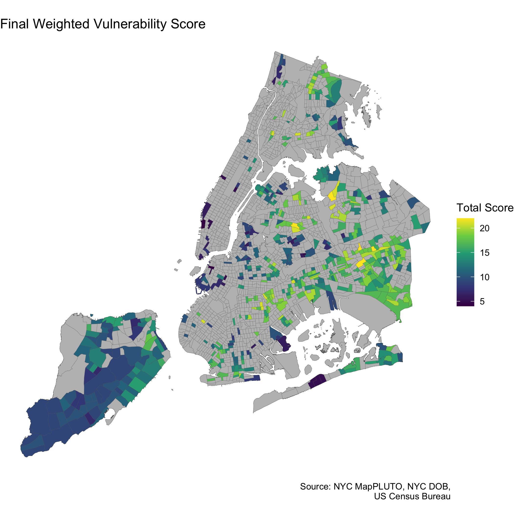

Estimating Informal Basement Apartment Flooding Risk

Problem Statement
When Hurricane Ida struck New York City in 2021, eleven people drowned after their basement apartments flooded. Informal basement units are a large and growing problem across the city, where more than 100,000 such units are estimated to exist. These units are overwhelmingly concentrated in BIPOC, low-income, and immigrant communities, per a Pratt Center analysis.
Skills Used:R (dplyr, tidyr, sf, ggplot), Project Management, Presentation
Questions:
- Where are informal basement units concentrated in New York City?
- How does the distribution of informal basement units interact with flood risk?
Estimating Informal Basements
Basements that are above grade can be considered more likely to be legal residences,as these units are more easily capable of complying with DOB regulations for basement units (eg.light, airflow, drainage). Basements that are below grade and full size (ie. at least 75% of the floor area of the first floor) can be assumed to be the most likely candidates for informal basement units.These units are large enough to provide ample space for a residential unit, but are more prone to flooding due to sitting below street level. For the purposes of this project, we will assume that buildings with full, below grade basements are candidates for informal units. This is a rough assumption that likely oversimplifies the reality,but given the lack of clear data, this model will allow us to narrow down our study somewhat in hopes of identifying the most at-risk data. Given this assumption, there are 456,804 buildings across the five boroughs that could potentially contain informal basement apartments.
| Basement Grade | Basement Size | # Units |
|---|---|---|
| Above Grade | Full | 146,815 |
| Above Grade | Partial | 1,535 |
| Below Grade | Full | 456,804 |
| Below Grade | Partial | 4,728 |


Quantifying Informal Basement Apartment Risk
Data from the US Census Bureau was pulled in order to quantify vulnerability. We calculated the percent of census tract that were noted as immigrants, percentages of non-white residents, and income levels across the five boroughs.
Final Vulnerability Scores
Finally, using all vulnerability layers and risk projections, we conducted a Multi-Criterion Decision Analysis (MCDA) to determine final scores for each densus tract. A maximum of 6 and minimum of 1 was assigned to each layer, with highest scores appearing in bright yellow.
The majority of census tracts with particularly vulnerable communities are in Queens. Therefore, we recommend resources be allocated to these particular census tracts, particularly in events of extreme flood.
| Census Tract, Borough | NTA Name | Immigrant Vulnerability | Income Vulnerability | Minority Vulnerability | Informal Apartments in Floodplain | Final Score | |
|---|---|---|---|---|---|---|---|
| Tract 454, Queens | Briarwood-Jamaica Hills | 6 | 5 | 6 | 5 | 22 | |
| Tract 479, Queens | Elmhurst-Maspeth | 6 | 5 | 5 | 6 | 22 | |
| Tract 869, Queens | Flushing | 6 | 6 | 6 | 4 | 22 | |
| Tract 254, Queens | South Jamaica | 4 | 6 | 6 | 6 | 22 | |
| Tract 470, Queens | Jamaica | 6 | 4 | 6 | 6 | 22 | |
| Tract 104, Brooklyn | Sunset Park East | 6 | 6 | 6 | 3 | 21 |
For a more in depth look at the code, see markdown document here.
Project completed with Erik Strand and Tamim Abedin for Peter Marcotullio and Kaz Sakamoto's Fall 2021 Environmental Data Analysis course.
Thumbnail credit: Michael Appleton